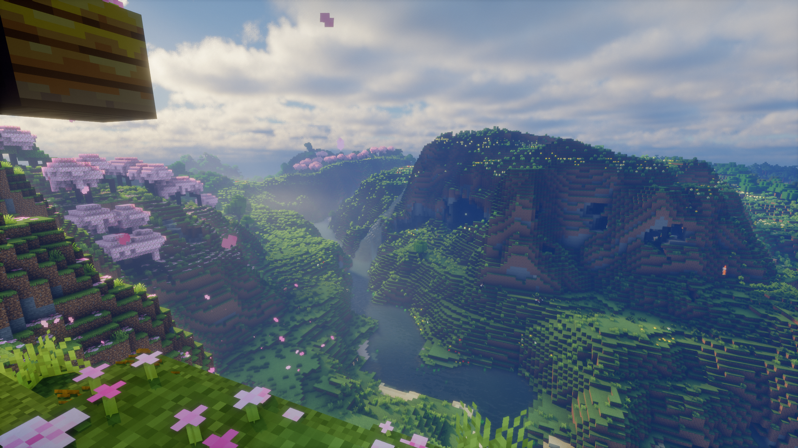
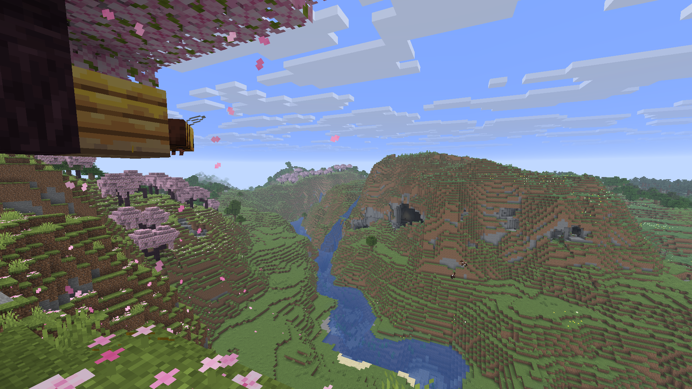
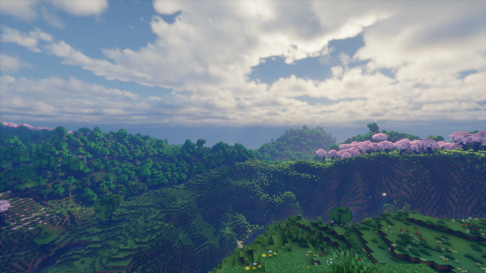
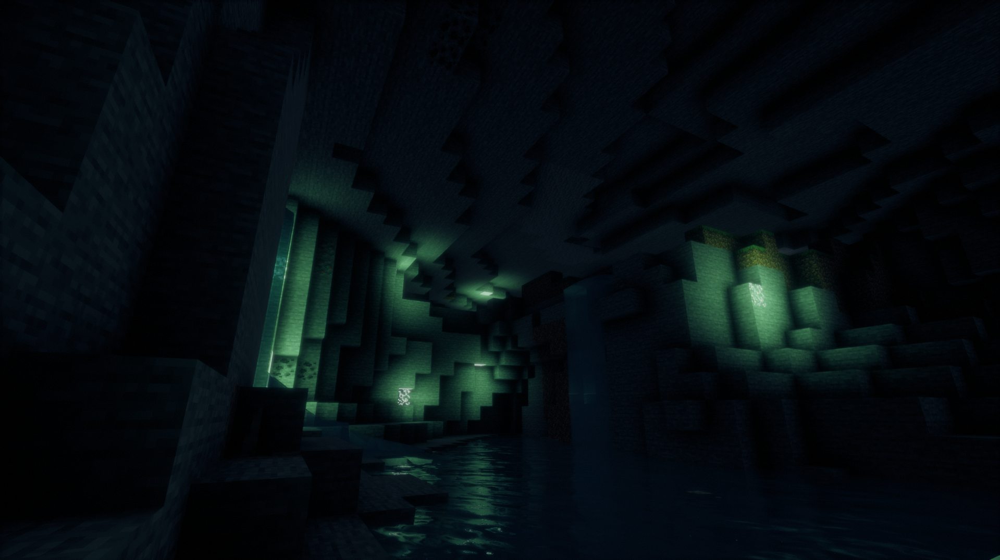

01
Soft Lighting
Soft lighting and natural light moods for a calmer, more atmospheric world.

Sphere is an atmospheric shaderpack with soft lighting, vivid colors, and an immersive world.
From sunny cherry blossom mountains to dark caves, Sphere transforms your Minecraft world into a cinematic landscape.
Soft lighting and natural light moods for a calmer, more atmospheric world.
Vibrant vegetation, rich colors, and a clean look that makes landscapes stand out.
Dark caves, reflective water, and mysterious light sources create more depth.
Drag the slider to compare Minecraft without shaders with Sphere.



Download Sphere for Minecraft Java Edition and bring your world to life.